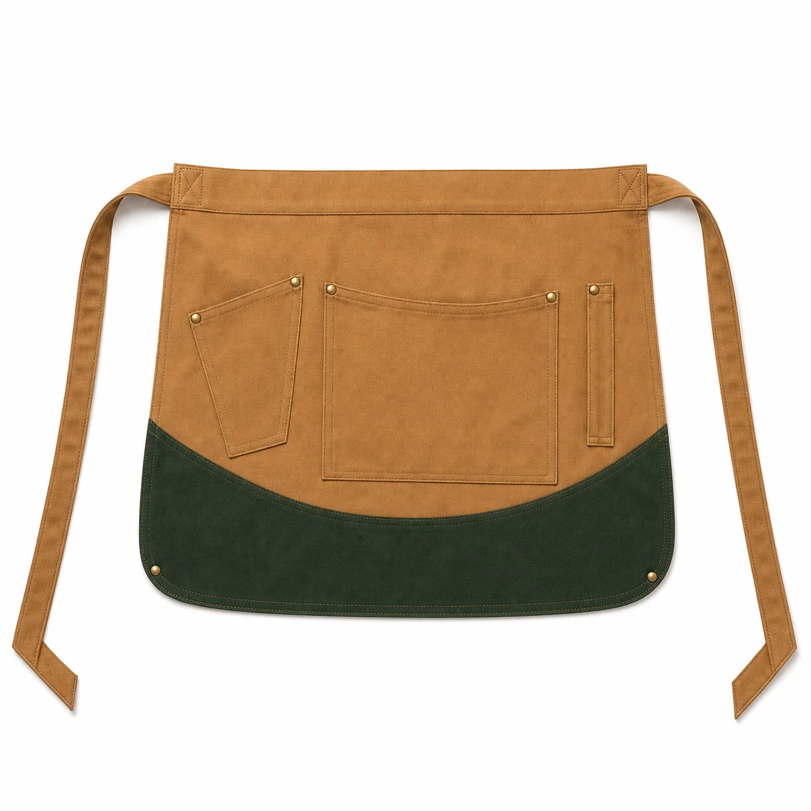

Camel Yeşil Çok Cepli Bel Önlüğü
Camel kanvas gövdesi, koyu yeşil kavisli alt paneli ve farklı ölçülerde üç cebiyle kafe, fırın ve perakende hizmet ekipleri için işlevsel kısa bel önlüğüdür.

Camel Yeşil Çok Cepli Bel Önlüğü üretim ayrıntıları
Camel Yeşil Çok Cepli Bel Önlüğü, kurumsal ekiplerde görev işlevi ve düzenli görünümü bir araya getirmek üzere planlanan aşçı kıyafetleri ve önlükler modellerindendir. Camel | Koyu yeşil alt panel | Üç farklı cep | Metal perçin detayı | Kısa servis modeli özellikleri modelin temel çerçevesini oluşturur.
Malzeme seçimi kolay bakımlı dokuma kumaş üzerinden; çalışma ortamı, vardiya süresi, hareket ve bakım düzeni dikkate alınarak yapılır. Dikiş, cep ve kapama noktaları numunede kontrol edilir.
Logo ölçüsü ve konumu kumaş yüzeyiyle birlikte değerlendirilir. Onaylanan nakış veya baskı uygulaması model koduna bağlanarak tekrar sipariş standardı korunur.
Adet, beden dağılımı, renk, teslimat noktası ve hedef tarih yazılı paylaşıldığında kumaş ve üretim planı netleştirilir. Seri üretim yalnız onaylanan kapsam üzerinden ilerler.
Model özellikleri
- Camel
- Koyu yeşil alt panel
- Üç farklı cep
- Metal perçin detayı
- Kısa servis modeli
Benzer ürünler
Gri Lacivert Robalı Teknik İş Önlüğü
KT-ON-022 kodlu kurumsal üretim modelini inceleyin.
Ürün detayına gidin →Petrol Antrasit Panelli Teknik İş Önlüğü
KT-ON-023 kodlu kurumsal üretim modelini inceleyin.
Ürün detayına gidin →Siyah Boyundan Askılı Mutfak Önlüğü
KT-ON-020 kodlu kurumsal üretim modelini inceleyin.
Ürün detayına gidin →Sık sorulan sorular
Minimum sipariş kaç adettir?
Bu modelde özel üretim minimum siparişi 50 adettir.
Logo uygulanabilir mi?
Kumaşa göre nakış, DTF, transfer veya serigrafi uygulanabilir.
Farklı renk üretilebilir mi?
Kumaş ve aksesuar uygunluğuna göre kurumsal renk planlanabilir.
Numune hazırlanabilir mi?
Proje kapsamına göre seri üretim öncesinde numune hazırlanabilir.
Beden dağılımı nasıl belirlenir?
Çalışan listesi ve numune kontrolüyle beden dağılımı yazılı onaya alınır.
Teklif için ne gerekir?
Adet, beden, renk, logo, teslimat şehri ve hedef tarih paylaşılmalıdır.
KT-ON-030 için teklif alın.
Ürün, adet, beden ve logo bilgilerinizi paylaşın.